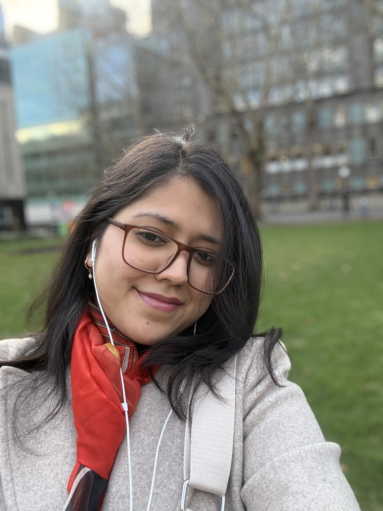

Bioinformatician and computational biologist working at the intersection of machine learning, genomics, and clinical data — building tools to turn biological complexity into actionable insight.

Developed a comparative machine learning framework to predict organ-specific metastasis in breast cancer and identify key gene signatures underlying tissue tropism. Analyses multiple classification algorithms to determine the most accurate predictor of metastatic site.
Developed NeuroNet, a multi-symptom analysis pipeline using Principal Component Analysis and Artificial Neural Networks to enable early detection of gliomas. The model integrates diverse symptom data to identify high-risk cases before clinical confirmation.
Developing a Gaussian Model integrated with Large Language Modelling to rapidly analyse patient symptoms by tokenising clinical queries. Enables fast, accurate screening for rare genetic disorders from unstructured clinical text.
Deep learning model with advanced feature engineering to predict false positive exoplanet candidates from telescopic data. Contributed observations to AAVSO via NASA JPL Exoplanet Watch project using EXOTIC software.
Patent covering novel ML approaches for single-cell RNA sequencing analysis applied to migraine pathogenesis. Performed data analytics to observe molecular interactions and key cellular mechanisms contributing to migraine using scRNA-seq data.
Designing transformer-based pipelines for genotype–phenotype prediction using ECG and EHR datasets. Building preprocessing workflows for longitudinal EHR data harmonization aligned with the MEDS schema.
Annotated 107,461 cells from an integrated CosMx spatial transcriptomics dataset, resolving 11 Leiden clusters into 8 cell lineages and identifying therapy-resistant neuroblast subtypes and TME signalling axes.
scRNA-seq analysis for clustering and visualisation of microglial homeostasis in a mice stab injury model. Integrated high-dimensional data using Seurat and visualised heat diffusion via PHATE mapping.
Deep learning model for automation of satellite telemetry anomaly detection using actual NISAR satellite data with 200+ features. Worked with ISRO and NASA-ISRO SAR Mission associates.
Capstone project using scRNA-seq data analytics to observe molecular interactions and cellular mechanisms in migraine pathogenesis. Resulted in a filed patent with the Government of India.
Designed an AI-driven Smart Space Cargo Management System at the National Space Hackathon — reached the Top 10 Finalists nationally out of hundreds of teams.
Designed an AI-driven Smart Space Cargo Management System — selected as a top 10 national finalist out of hundreds of teams, evaluated by ISRO and IIT Delhi judges.
For exceptional performance in representing VIT in international events across research and technical competitions.
For exceptional performance in national-level events, recognised for contributions to research and the bioinformatics programme.
Presented a CRISPR-based phage vaccine hypothesis on technology diversity in R&D at India's premier student technical festival.
Promoted interdisciplinary research in Space Science and AI/ML through workshops and technical events. Organised the astrobiology case study event 'Genesis' and secured sponsorships for flagship programs. Invited ISRO scientists and delivered outreach talks on constellations and space exploration at VIT's Gravitas science fest.
Analysed telescopic data using EXOTIC software to study CoRoT-2b exoplanet transits; contributed observations to AAVSO.
Conducted educational sessions introducing school students to astronomy and space exploration concepts.
Courses: Calculus, Differential Equations, Python, Machine Learning, Deep Learning, Bioinformatics, Genetics. Research: deep learning pipelines for genotype–phenotype prediction using ECG and EHR datasets with Dr. Arunashis Sau.
CGPA: 8.83/10 · Final Semester GPA: 9.67/10. Capstone: Molecular interactions in Migraine Pathogenesis using scRNA-Sequencing. Courses include DSA, AI, Molecular Biology, Biological Databases, Data Analytics in Bioinformatics.